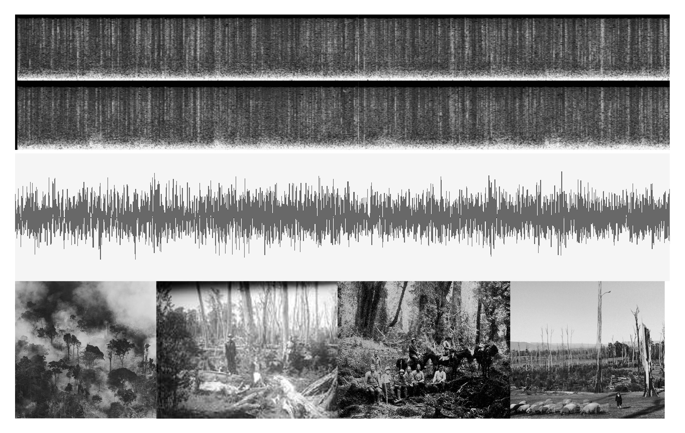
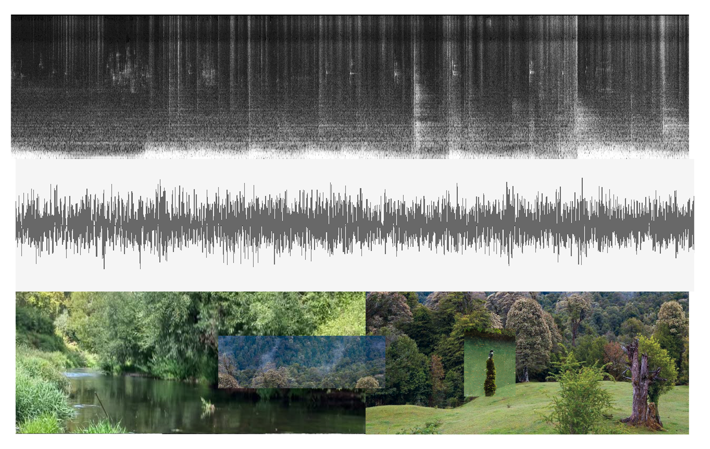
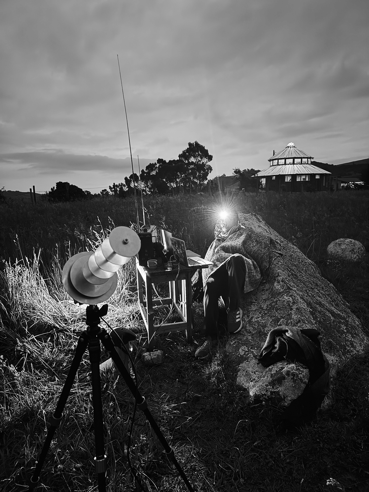
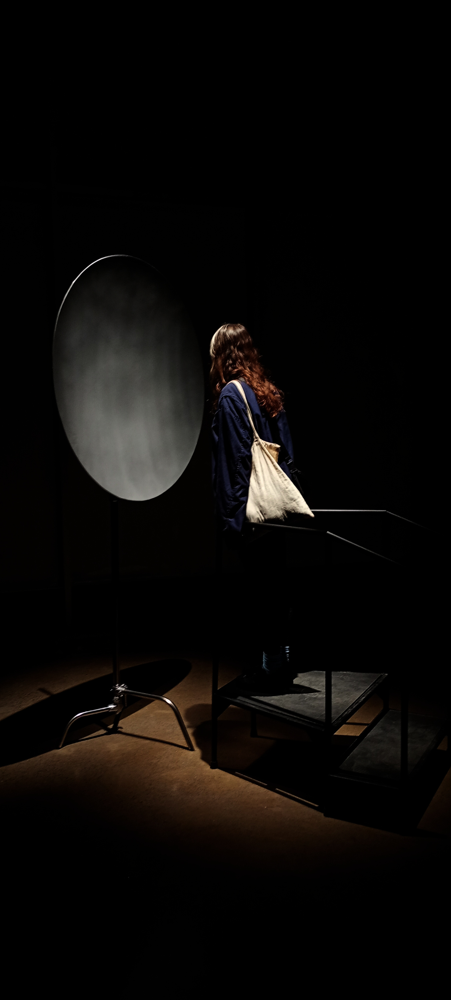

Radiofrecuencia de un bosque en fuego
Radiofrequency of a forest on fire
What sonic traces can we send into the cosmos to imagine other forms of relationship — more sensitive and non-extractivist — within and beyond the planet?
- En
Sound essay created to be sent to the start Mu Arae through the lunar bounce technique as part of the 100 Años Luz in which the message will return to planet Earth and be heard in 100 -human- years.
The piece weaves together different temporal layers through audio recordings: on one side, sonic recreations of the 1851 burning of the Chan Chan forest during the German colonization of southern Chile; on the other, present-day soundscapes from those same territories around Osorno. These coexist with a narration of memory connected to Varela and Maturana’s autopoietic vision of how life finds other ways to sustain itself even when disrupted.
The work functions as a vibrational archive and a poetic technology, projecting a fragment of southern Chile’s memory into an interstellar scale.
The historical framework of the piece was developed with the support of historian Camilo Jerez Concha.
- Es
Ensayo sonoro creado para ser enviado a la estrella Mu Arae a través de la técnica de rebote lunar gracias al proyecto100 Años Luz en donde el mensaje retornará al planeta tierra y podrá ser escuchado en 100 años humanos.
La pieza pretende entrelazar distintas líneas temporales mediante capas de grabaciones de audio: por un lado, emulaciones del incendio provocado al bosque Chan Chan en 1851 para la colonización alemana en el sur de chile; por otro, paisajes sonoros actuales de esos mismos territorios en la zona de Osorno. Ambas conviven con una narración de memoria hacia los hechos conectado con una visión autopoiética de Varela y matura sobre cómo la vida encuentra otras formas de sostenerse incluso al ser perturbada.
La obra funciona como un archivo vibrátil y una tecnología poética que proyecta un fragmento de la memoria del sur de Chile hacia una escala interestelar.
El marco histórico de la pieza fue desarrollado con ayuda del historiador Camilo Jerez Concha.
- Year
- 2025
- Category
- Sound Essay
- Location
- Chile
- Collaborators
- 100 Años Luz team, Tsonami Arte Sonoro, Fernando Godoy Monsalve
- Exhibition
- Parque Cultural de Valparaíso - Ex Cárcel | 2026

Visual documentation authored by the project team,
Exhibition documentation at Sala Laboratorio, Parque Cultural de Valparaíso – Ex Cárcel 2026.

Visual documentation authored by the project team,
Exhibition documentation at Sala Laboratorio, Parque Cultural de Valparaíso – Ex Cárcel 2026.

Visual documentation authored by the project team,
Exhibition documentation at Sala Laboratorio, Parque Cultural de Valparaíso – Ex Cárcel 2026.

Visual documentation authored by the project team, Exhibition documentation at Sala Laboratorio, Parque Cultural de Valparaíso – Ex Cárcel 2026.

Visual documentation authored by the project team, Exhibition documentation at Sala Laboratorio, Parque Cultural de Valparaíso – Ex Cárcel 2026.

Visual documentation authored by the project team, Exhibition documentation at Sala Laboratorio, Parque Cultural de Valparaíso – Ex Cárcel 2026.